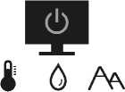

Safety precautions
Power safety

Please follow these safety instructions for best performance, and long life for your monitor.
0-40°C 10-90% 0-3000m

-20-60°C 10-60% 0-12000m
- The AC plug isolates this equipment from the AC supply.
- The power supply cord serves as a power disconnect device for pluggable equipment. The socket outlet should be installed near the equipment and be easily accessible.
- This product should be operated from the type of power indicated on the marked label. If you are not sure of the type of power available, consult your dealer or local power company.
- The Class I pluggable equipment Type A must be connected to protective earth.
- An approved power cord greater or equal to H03VV-F or H05VV-F, 2G or 3G, 0.75mm2 must be used.
- Use only the power cord provided by BenQ. Never use a power cord that appears to be damaged or frayed.
- To avoid possible damage to the monitor, do not use it in a region where power supply is unstable.
- Ensure that the power cord is connected to a grounded power outlet before turning on the monitor.
- To avoid possible danger, observe the total electric load when using the monitor with a (multi-outlet) extension cord.
- Always turn off the monitor before unplugging the power cord.
For Germany only:
- (If the weight of the product is less than or equal to 3 kg) An approved power cord greater or equal to H03VV-F, 3G, 0.75mm2 must be used.
- (If the weight of the product is more than 3 kg) An approved power cord greater or equal to H05VV-F or H05RR-F, 3G, 0.75mm2 must be used.
- (If a remote control is provided) RISK OF EXPLOSION IF BATTERY IS REPLACED BY AN INCORRECT TYPE. DISPOSE OF USED BATTERIES ACCORDING TO THE INSTRUCTIONS.
For models with adapter:
- Use only the power adapter supplied with your LCD Monitor. Use of another type of power adapter will result in malfunction and/or danger.
- Allow adequate ventilation around the adapter when using it to operate the device or charge the battery. Do not cover the power adapter with paper or other objects that will reduce cooling. Do not use the power adapter while it is inside a carrying case.
- Connect the power adapter to a proper power source.
- Do not attempt to service the power adapter. There are no service parts inside. Replace the unit if it is damaged or exposed to excess moisture.
Installation
-
Do not use your monitor under any of the following environmental
conditions:
- Extremely high or low temperature, or in direct sunlight
- Dusty places
- Highly humid, exposed to rain, or close to water
- Exposed to vibrations or impacts in places such as cars, buses, trains, and other rail vehicles
- Near heating appliances such as radiators, heaters, fuel stoves, and other heat-generating items (including audio amplifiers)
- An enclosed place (such as a closet or bookcase) without appropriate ventilation
- An uneven or sloping surface
- Exposed to chemical substances or smoke
- Carry the monitor carefully.
- Do not place heavy loads on the monitor to avoid possible personal injury or damage to the monitor.
- Ensure that children do not hang or climb onto the monitor.
- Keep all packing bags out of reach of children.
Operation
- To protect your eyesight, please refer to the user manual to set the optimal screen resolution and the viewing distance.
- To reduce eye fatigue, take a break on a regular basis while using the monitor.
-
Avoid taking either one of the following actions for a long time.
Otherwise, burn marks may occur.
- Play images that cannot occupy the screen entirely.
- Place a still image on the screen.
- To avoid possible damage to the monitor, do not touch the monitor panel by finger tip, pen, or any other sharp objects.
- Excessively frequent plug and unplug of video connectors may cause damage to the monitor.
- This monitor is designed mainly for personal use. If you want to use the monitor in a public place or a harsh environment, contact your nearest BenQ service center for assistance.
- To avoid possible electric shock, do not dissemble or repair the monitor.
- If a bad smell or an abnormal sound appears to come from the monitor, contact your nearest BenQ service center for assistance immediately.
Caution
- The monitor should be 50 ~ 70 cm (20 ~ 28 inches) away from your eyes.
- Looking at the screen for an extended period of time causes eye fatigue and may deteriorate your eyesight. Rest your eyes for 5 ~ 10 minutes for every 1 hour of product use.
- Reduce your eye strain by focusing on objects far way.
- Frequent blinking and eye exercise help keep your eyes from drying out.
Safety notice for remote control (applicable if a remote control is provided)
- Do not put the remote control in the direct heat, humidity, and avoid fire.
- Do not drop the remote control.
- Do not expose the remote control to water or moisture. Failure to do so could result in malfunction.
- Confirm there is no object between the remote control and the remote sensor of the product.
- When the remote control will not be used for an extended period, remove the batteries.
Battery safety notice (applicable if a remote control is provided)
The use of the wrong type of batteries may cause chemical leaks or explosion. Please note the following:
- Always ensure that the batteries are inserted with the positive and negative terminals in the correct direction as shown in the battery compartment.
- Different types of batteries have different characteristics. Do not mix different types.
- Do not mix old and new batteries. Mixing old and new batteries will shorten battery life or cause chemical leaks from the old batteries.
- When batteries fail to function, replace them immediately.
- Chemicals which leak from batteries may cause skin irritation. If any chemical matter seeps out of the batteries, wipe it up immediately using a dry cloth, and replace the batteries as soon as possible.
- Due to varying storage conditions, the battery life for the batteries included with your product may be shortened. Replace them within 3 months or as soon as you can after initial use.
- There may be local restrictions on the disposal or recycling of batteries. Consult your local regulations or waste disposal provider.
If the supplied remote control contains a coin / button cell battery, pay attention to the following notice as well.
- Do not ingest battery. Chemical Burn Hazard.
- The remote control supplied with this product contains a coin / button cell battery. If the coin / button cell battery is swallowed, it can cause severe internal burns in just 2 hours and can lead to death.
- Keep new and used batteries away from children. If the battery compartment does not close securely, stop using the product and keep it away from children.
- If you think batteries might have been swallowed or placed inside any part of the body, seek immediate medical attention.
Care and cleaning
- Do not place the monitor face down on the floor or a desk surface directly. Otherwise, scratches on the panel surface may occur.
- The equipment is to be secured to the building structure before operation.
-
(For models that support wall or ceiling mounting)
- Install your monitor and monitor mounting kit on a wall with flat surface.
- Ensure that the wall material and the standard wall mount bracket (purchased separately) are stable enough to support the weight of the monitor.
- Turn off the monitor and the power before disconnecting the cables from the LCD monitor.
- Always unplug the product from the power outlet before cleaning. To clean the monitor, see Cleaning the LCD screen on page 12 for more information.
- Slots and openings on the back or top of the cabinet are for ventilation. They must not be blocked or covered. Your monitor should never be placed near or over a radiator or heat sources, or in a built-in installation unless proper ventilation is provided.
- Do not place heavy loads on the monitor to avoid possible personal injury or damage to the monitor.
- Consider keeping the box and packaging in storage for use in the future when you may need to transport the monitor.
-
Refer to the product label for information on model name, power
rating, manufacturing date, barcode, serial number, and
identification markings. The locations of labels vary by model. See
the illustration below for where the labels can be.
Possible label location:
Inside the VESA cover
Lower part of the rear cover
Bottom front bezel
Servicing
- Do not attempt to service this product yourself, as opening or removing covers may expose you to dangerous voltages or other risks. If any of the above mentioned misuse or other accident such as dropping or mishandling occurs, contact qualified service personnel for servicing.
- For replacement of power cord, connection cables, remote control or power adapter, please contact BenQ customer service.
-
Contact your place of purchase or visit the local website from
Support.BenQ.com
for more support.
Support-BenQ.com
General warranty information
Note that the monitor warranty may be void if any of the following conditions occurs:
- Documents required for warranty services have been altered by unauthorized use or is illegible.
- The model number or production number on the product has been altered, deleted, removed or made illegible.
- Repairs, modifications, or alterations have been made by unauthorized service organizations or persons.
- Damage caused by improper storage of the monitor (including but not limited to force majeure, direct exposure to sunlight, water, or fire).
- Reception problems occurred due to external signals (such as antenna, Cable TV) outside the monitor.
- Defects caused by abuse or misuse of the monitor.
- Before using the monitor, it is the sole responsibility of the user to check whether the monitor is compatible with local technical standards if the user brings the monitor out of its intended sales area. Failure to do so may cause product breakdown and the user will have the pay the repairing costs.
- It is the sole responsibility of the user if problems (such as data loss and system failure) occurred due to non-factory provided software, parts, and/or non-original accessories.
- Please use the original accessories (e.g. power cable) only with the device to avoid possible dangers such as electric shock and fire.
Typographics
| Icon / Symbol | Item | Meaning |
| Warning | Information mainly to prevent the damage to components, data, or personal injury caused by misuse and improper operation or behavior. | |
|
|
Tip | Useful information for completing a task. |
| Note | Supplementary information. |
In this document, the steps needed to reach a menu may be shown in condensed form, for example: .